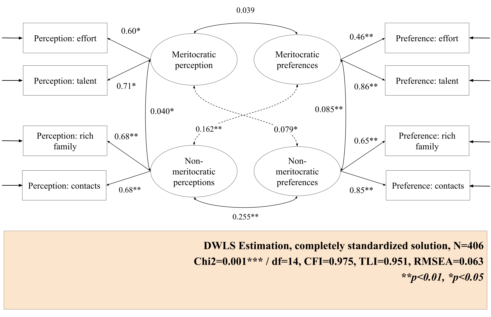
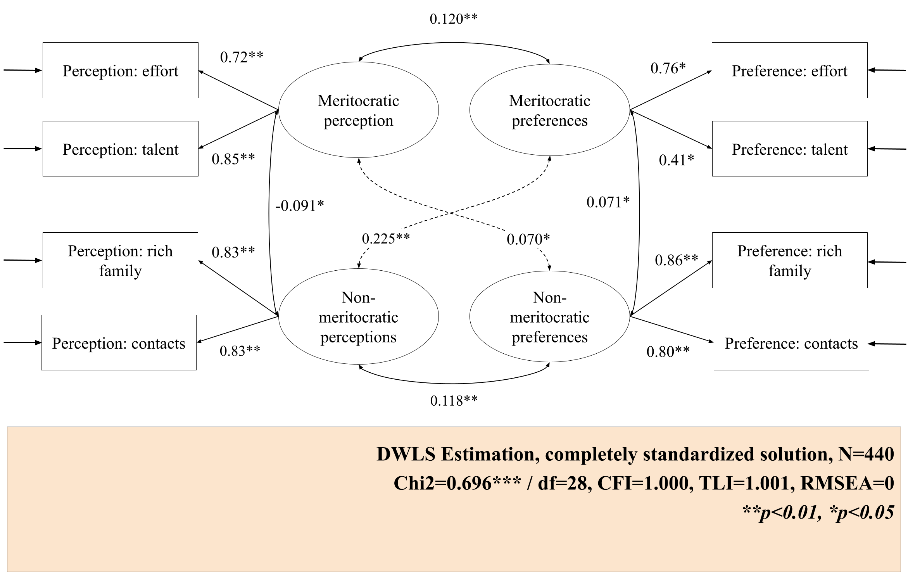

| chisq | df | pvalue | cfi | tli | rmsea | srmr | |
|---|---|---|---|---|---|---|---|
| General | 41.026 | 14 | 0.000 | 0.989 | 0.978 | 0.048 | 0.039 |
| Primary | 36.295 | 14 | 0.001 | 0.975 | 0.951 | 0.063 | 0.049 |
| Secondary | 10.877 | 14 | 0.696 | 1.000 | 1.004 | 0.000 | 0.029 |
Cohort Invariance Test

The diagram shows the standardized factor loadings estimated with WLSMV for the primary and secondary cohorts. One of the first findings is that within each cohort, the loadings vary depending on the factor. In the case of the primary education model, the loadings of both meritocratic perception indicators differ as perception of effort at .60 and perception of talent at .71, so the meritocratic perception factor explains talent more than effort. In contrast, in the meritocratic preferences factor, the loadings vary greatly, with preference for effort being .46 and preference for talent being .86. This suggests that the factor explains the second item more than the first. Finally, the indicators of the non-meritocratic preferences factor vary, but not as strongly.

In the secondary education model, some similarities can be seen in comparison to the primary model. The indicators of the meritocratic perception factor have slightly higher loadings than in the previous model, but they do not differ as much from each other. The difference in the indicators of meritocratic preference is reversed, with preference for effort becoming the highest (.76) and preference for talent the lowest (0.41). With regard to non-meritocratic preferences, the indicators have much more similar factor loadings than in the primary school model.
Table 1 shows the fit indices for each of the three models. All models achieved a non-significant chi-square, which could be expected given their sensitivity to large samples, such as those used in this study.
The first model is the general model, i.e., the one that includes primary and secondary school students. It can be seen that it has good fit indices (CFI=0.989, RMSEA=0.048, \(\chi^2\)(df=14)=41.026), so we can conclude that the four latent factor scale works well for students.
The second model contains data from primary students. In this case, the fit indices work acceptable (CFI=0.975, RMSEA=0.063, \(\chi^2\)(df=14)=36. 295). In this case, the scale has less validation than for the previous model.
It is noteworthy that, for the secondary education model, most indicators have values that are close to perfect (CFI=1, RMSEA=0, \(\chi^2\)(df=14)=11.779). However, the results of this model could be overfitting, so they should be interpreted with caution.
| Model | χ^2 (df) | CFI | RMSEA (90 CI) | Δ χ^2 (Δ df) | Δ CFI | Δ RMSEA | Decision |
|---|---|---|---|---|---|---|---|
| Configural | 24.95 (26) | 1.000 | 0 (0-0.037) | 0 (0) | 0.000 | 0.000 | Reference |
| Weak | 47.88 (34) | 0.995 | 0.031 (0-0.05) | 22.929 (8) *** | -0.005 | 0.031 | Reject |
| Strong | 59.66 (38) | 0.992 | 0.037 (0.017-0.054) | 11.785 (4) ** | -0.003 | 0.006 | Reject |
The results of the different invariance models are displayed at the previous table. To examine invariance across cohorts the same steps in Dubravka et al. (2019) were followed, who propose the estimation of three models: the configural model, another restricting the thresholds, and finally restricting the thresholds and factor loadings.
The configural model was first estimated, which maintains the same factor structure for both baseline and midline. The configural model has good fit indices (CFI = 0.992, RMSEA = 0.037), so there is empirical evidence that the factor structure behaves stably in both groups.
Looking at the thresholds restricted model, it appears that when thresholds are restricted to equality, the four-factor latent model is not equivalent across the two cohorts in the study in accordance with Chen (2007) (\(\Delta\)CFI -.014 < -. 01); \(\Delta\)RMSEA .019 > .015). This result implies that by restricting thresholds, the meritocracy scale varies between primary and secondary education. In this case, invariance is not satisfied.
The level represented as strong restricts both thresholds and factor loadings. When compared with the previous level of invariance, it can be seen that the criteria for assuming that the meritocracy scale remains stable across cohorts are not met either. (\(\Delta\)CFI -.005 < -. 01); \(\Delta\)RMSEA .003 < .015), so invariance is rejected.
It is pertinent to ask to what extent these results are due to the instability of the secondary education model. An attempt was made to resolve its overfitting, but this was not possible, which may have had direct implications for this part of the analysis.
References
Chen, F. F. (2007). Sensitivity of Goodness of Fit Indexes to Lack of Measurement Invariance. Structural Equation Modeling: A Multidisciplinary Journal, 14(3), 464–504. https://doi.org/10.1080/10705510701301834